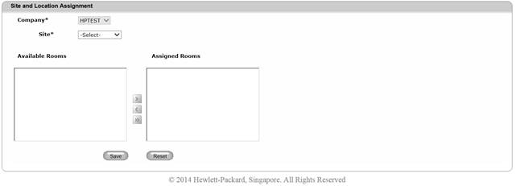
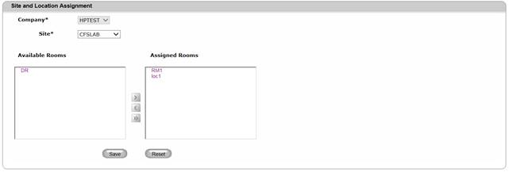
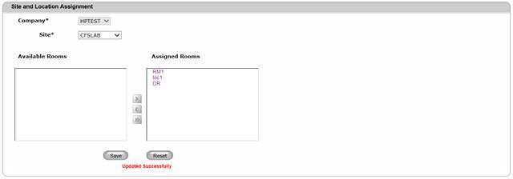

Create Site-Location Assignment
To create a Site – Location assignment,
1. Navigate Assignment>>Site and Location assignment on the DCTrackMobileWeb menu bar.
You will see the Site and Location assignment screen.

Figure 111: Site and Location Assignment Screen
2. Select the Site from the dropdown list.
You will see the list of current Available Rooms and/or Assigned Rooms in their corresponding text boxes.

Figure 112: Site – and Location Assignment Screen with list of Available Locations
3. Select a Location from the Available Locations list.
Can I select multiple locations for assignment?
Yes. Press [Ctrl] key on your keyboard while selecting different locations.
4.
Click  to move the selected
location(s) to the Assigned Locations list.
to move the selected
location(s) to the Assigned Locations list.
Can I still return an assigned location to Available Locations list?
Yes, only if the assigned location (Room
and its corresponding sub locations) does not contains any assets,
then the location can be moved to available locations by selecting
the location from assigned locations then Click  icon to return selected locations(s) to
the Available location list.
icon to return selected locations(s) to
the Available location list.
5.
Click Save  button to complete the assignment process
or else click Reset
button to complete the assignment process
or else click Reset  button to refresh the page
fields
button to refresh the page
fields
You will see the successful assignment message.

Figure 113: Site and Location Assignment Screen – Successful Assignment
Can I move all locations to Assigned Locations?
Yes. Just click  icon to move all available locations to
Assigned Locations list.
icon to move all available locations to
Assigned Locations list.